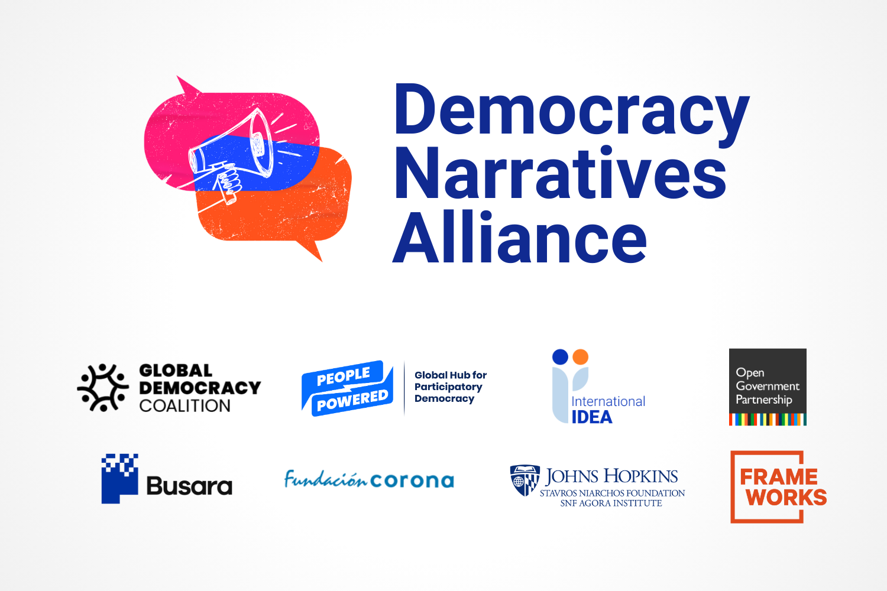

Projects
Some of the things I'm engaged in

Teaching Civic Tech and Algorithms for Social Good @ Bard College
In Spring 2026 I’m teaching Civic Tech and Algorithms for Social Good.

Democracy narratives research and campaign
A new initiative to compile, develop, and promote compelling narratives that increase public support for and engagement in democracy.
AI and facilitation working group at MetaGov
Designing experimental interventions to study deliberative facilitation techniques.